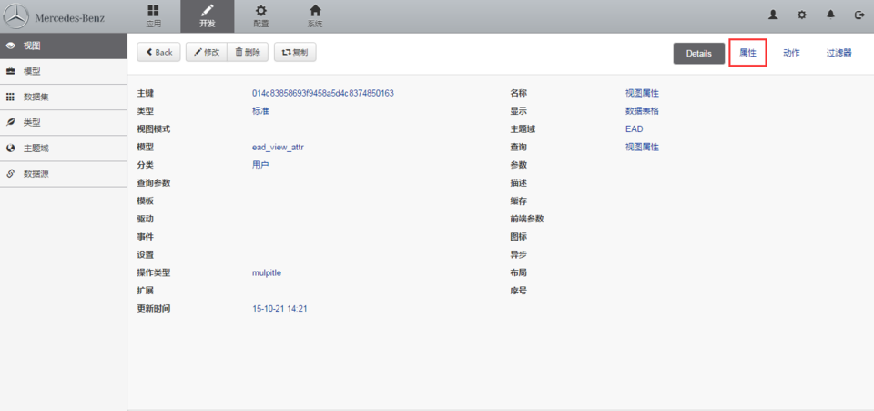

6.2 创建视图属性
菜单路径：开发 > 视图 > 属性

选定已经存在的视图属性或者新建一个视图，进入视图选择属性。

点击"新增"动作按钮，开始新建视图属性，或者选定已经存在的视图属性，对该视图属性进行"修改，删除"操作。

- 名称：属性名称，会显示到界面表头上
- 模型属性：属性所对应的模型属性
- 表单：操作时，显示的表单类型
- 文本框
- 文本框2
- 下拉列表
- 选择列表
- 按钮选择
- 日期
- 时间
- 多选列表
- 文本域
- 编辑器
- HTML
- 代码
- 单选框
- 逻辑选择
- 树形过滤器
- 密码
- 文件
- 隐藏
- 字典模式：当该字段为数据字典时，获取数据的方式
- 全部：获取全部的字典数据
- 按数据：根据查询到的列表数据返回字典数据
- 显示模式：
- title，若该属性可以通过超链接点进去，查看详细内容及子视图，则需要设置为title
- 权限：
- 可写，该属性可以新增和编辑
- 只创建，该属性只可以新增
- 只更新，该属性只可以更新
- 只读，该属性的值会查询并发送到浏览器
- 禁止，该属性的值不会发送到浏览器
- 绑定视图：当该属性所对应的模型属性为单例模型或模型集合时，需要绑定相应的子视图
- 隐藏：浏览器界面隐藏设置
- 列表，列表上隐藏
- 全部，列表及详细视图中都隐藏
- 默认值：类似于模型属性默认值，该默认值与模型属性中的默认值按就近原则处理
- 序号：界面上数据显示的顺序
- 分组：设置分组项后，会在详细内容中进行分组
- 系统：类似于模型属性的系统，该系统与模型属性中的系统按就近原则处理
- Format：暂不设置
- Display：暂不设置
- Column：该项在查看详细内容中所占用的栏位